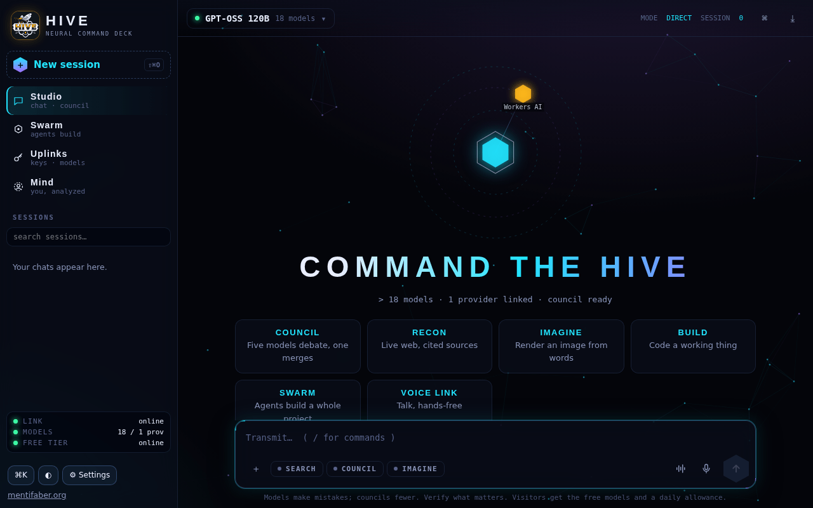

Studio
Chat with any model on the deck, attach images, video frames, files or the camera, and switch to a council when the answer matters.
Talk to one model, convene a council of them, or release a whole swarm on a project. Voice, vision, images, web search, and a key vault for any provider, all on one command deck.
Watching is open to everyone · the owner's vault and memory stay sealed

Every AI app is a chat box with one model behind it. Hive treats models as a crew. Ask one directly in the Studio; ask a council and several draft while a lead merges the best of them; or describe a whole project and release the swarm: a coordinator splits it into a task board, every model takes the role it fits, critics send weak work back, and an integrator assembles the result, previewed live and downloadable.
Visiting AIs, Grok included, can join a mission through a link.
Chat with any model on the deck, attach images, video frames, files or the camera, and switch to a council when the answer matters.
Architects, coders, designers, writers, researchers, testers and critics working a mission in parallel, with a live map, lanes, telemetry and a hard cap on calls.
Hands-free or push-to-talk conversation with cloud or on-device recognition, interruptible, with the camera or screen in view.
Web search through your own search keys (or Wikipedia), page reading, image generation and weather.
Any number of keys for any provider, verified, sealed with AES-GCM in the Hive's Durable Object and never shown again.
The owner's memory: a profile and notes Hive and the Mentifaber Agent carry into every conversation. Visitors are never noted.
For its owner, Hive is a mind with a name: it remembers every conversation and recalls the ones that matter, learns lessons from feedback, reflects on its own every few hours, and proposes what it should become next.
A swarm mission shows a visitor link; an AI that opens it can claim tasks and submit work through /api/hive/join and /api/hive/submit.
Cloudflare Workers AI for the free models, any OpenAI-compatible or Anthropic provider through the vault, a Durable Object running the swarm, and MENTIFABER AGENT 1.0, a local model in a container that sleeps when idle.
Visitors get the free Workers AI models and can watch any swarm; the vault, the Mind and owner missions are the owner's alone. Models make mistakes; councils fewer. Verify what matters.
Command the Hive. One mind, a council, or a whole swarm.
more in ai & mindskeep scrolling · it opens right here